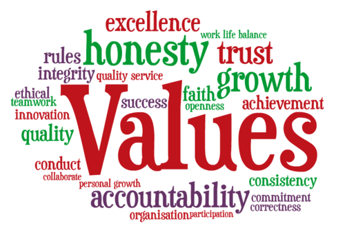

Values are the beliefs that guide how I act and make decisions. Ethics is how I apply those values in real life, especially when nobody is forcing me to do the right thing. The four values below are the ones I try to follow because they affect my choices, my relationships, and my future.
Discipline
What it means: Staying consistent, controlling my choices, and doing what needs to be done even when it’s not easy.
Where it comes from: This comes from school responsibilities, sports/work habits, and seeing how consistency leads to results.
Why it’s important to me: Discipline helps me reach long-term goals, stay organized, and build trust with others because I follow through.
If I don’t follow it: I fall behind, waste time, and miss opportunities. Over time it can hurt my grades, my reputation, and my confidence.
Justice
What it means: Treating people fairly, respecting rules that protect others, and speaking up when something is wrong.
Where it comes from: I learned it from family expectations, school experiences, and seeing how unfair situations can seriously impact people.
Why it’s important to me: Justice builds trust and respect. Fairness makes teams, friendships, and communities work better.
If I don’t follow it: I could ignore unfairness or contribute to it. That can damage relationships and make people feel unheard or unsafe.
Honesty
What it means: Telling the truth, being real with people, and not hiding things just to make myself look better.
Where it comes from: I learned that trust is built on honesty, and that lies usually create bigger problems later.
Why it’s important to me: Honesty gives me credibility with friends, teachers, and coworkers. It also helps me grow because I own mistakes.
If I don’t follow it: Trust breaks fast. Even small lies can snowball, create stress, and hurt how people see me long-term.
Kindness / Generosity
What it means: Being considerate and willing to help people with my time, attention, support, or resources.
Where it comes from: This comes from how I was raised and from seeing that people remember how you treat them.
Why it’s important to me: Kindness builds strong relationships, improves teamwork, and creates a positive environment around me.
If I don’t follow it: I can come off selfish or careless. That can hurt friendships, teamwork, and create negativity that affects everyone.